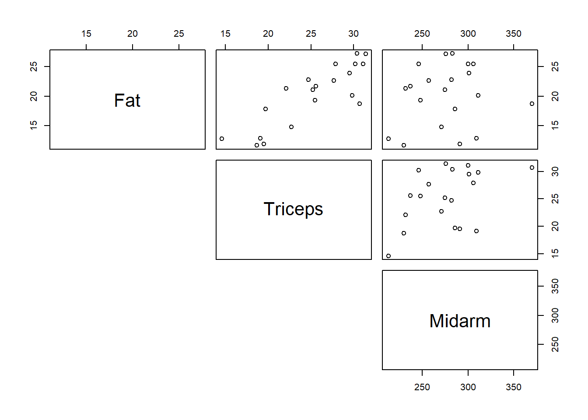

4 Exercise 1: Body fat
The dataset femalebodyfat.csv gives the % body fat, triceps skinfold thickness (taken at the midpoint of the upperarm) and the midarm circumference (the circumference of the non-dominant arm midway between the shoulder and the elbow) for twenty healthy females aged 20 to 34. The % body fat for each person was obtained by a cumbersome and expensive procedure requiring the immersion of the person in water. It would therefore be very helpful if a regression model with tricep skinfold thickness and midarm circumference could provide reliable predictions of the amount of body fat, since the measurements needed for the predictor variables are straightforward to obtain.
Read in the data using:
QUESTION
- Use an appropriate exploratory analysis to explore the relationships between % body fat, triceps skinfold thickness and midarm circumference.
 This shows a moderate positive linear relationship between % body fat and triceps skinfold thickness.
There doesn't seem to be much of a relationship between % body fat and midarm circumference but we will continue to explore whether it is useful to the model.
- Fit a multiple linear regression model to the data in order to predict % body fat from triceps skinfold thickness and midarm circumference. Provide very brief comments on the adequacy of your model.
- Use
Rto compute a 95% confidence interval for the coefficient of each predictor in the model.
## 2.5 % 97.5 %
## (Intercept) -2.67783060 16.261085426
## Triceps 0.73003885 1.271130967
## Midarm -0.08040683 -0.005881575- Comment on your intervals.
The confidence interval for the variable Triceps zero so we conclude it a statistically significant contribution in addition to the predictor Midarm in explaining the variability in Fat. Therefore Triceps should be the model. The coefficient for Triceps is highly likely to lie between and (Enter your answer by rounding to two decimal places).
- Find a 95% confidence interval for the mean % body fat for a female (aged 20 to 34) whose triceps skinfold thickness is 25mm and midarm circumference is 310mm. Interpret the interval.
Define the prediction dataframe for the given predictor values and use the predict() function with that dataframe. Be careful to use the correct parameter to get a confidence interval not a prediction interval.
predframe <- data.frame(Triceps = 25, Midarm = 310)
predict(modelfat, int = "c", newdata = predframe)## fit lwr upr
## 1 18.43155 16.67794 20.18516- Find a 95% prediction interval for the % body fat of a future female with skinfold thickness and midarm circumference values of your choice. Interpret the interval.